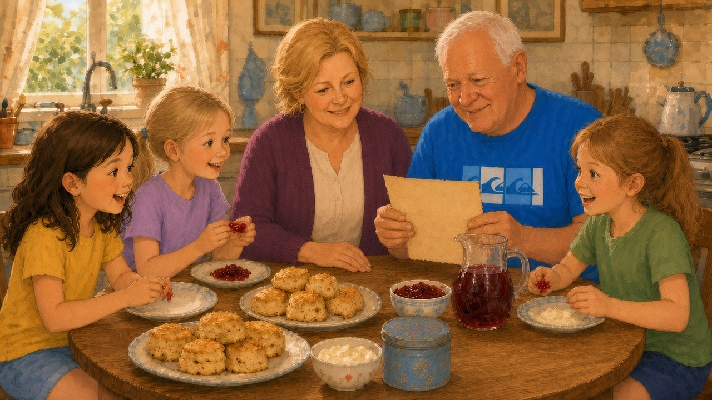
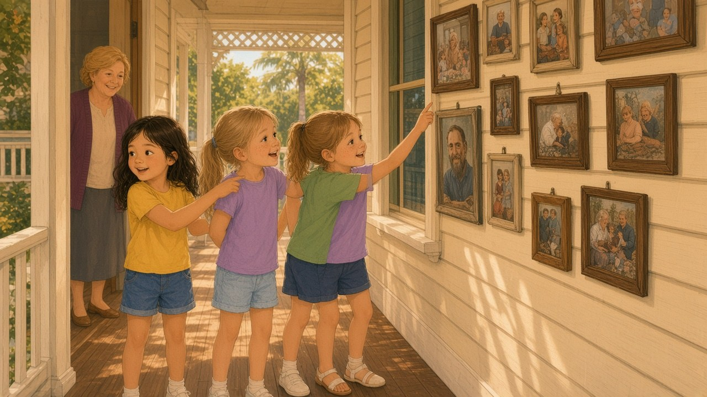
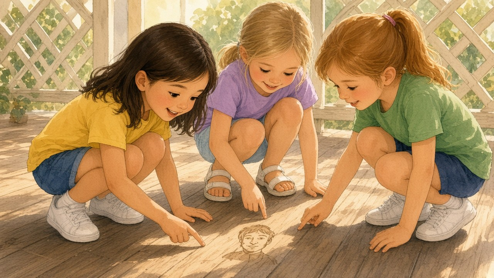

The car turned into Nana and Poppy’s street just as the afternoon light turned soft and golden. Shayla pressed her nose to the window. She always did that. There was something about that first glimpse of the old weatherboard house that made her heart hop like a kangaroo.
“We’re here!” she shouted, already unclipping her seatbelt before the car had quite stopped.
Olivia laughed beside her. Olivia was careful with seatbelts and careful with maps and careful with almost everything, but she laughed easily when Shayla bounced. Isabella leaned forward between the seats, blonde hair swinging, and pointed through the windscreen.
“Look — Nana’s waving from the verandah!”
And so she was. Nana stood with one hand shading her eyes and the other already reaching for hugs. Poppy appeared behind her a moment later, wiping his hands on an old tea towel as if he had been caught mid-job and didn’t mind one bit.
The three girls tumbled out into the warm Hervey Bay air. Cicadas hummed in the trees. Somewhere down the street a magpie called. Nana scooped Shayla up first, then Olivia, then Isabella, until everyone was tangled in arms and sunscreen and the smell of lemon myrtle from the garden.
“My treasure hunters,” Nana said, kissing the tops of their heads. “You’ve arrived at exactly the right time.”
“For what?” asked Isabella at once. Isabella always asked the interesting questions first.
Nana only winked. “For afternoon tea, of course. And perhaps… a story.”
Poppy grinned. “Or two stories. Or three. This house has more stories than cupboards, and that’s saying something.”

The house did have a great many cupboards. It was tall and a little crooked in places, painted a friendly cream that had faded in the Queensland sun. The verandah wrapped around like a hug. Lattice screens cast soft diamond shadows on the floorboards. From the front steps you could see all the way through the side gate to the mango tree and the long strip of lawn that ran towards the back fence, where palms nodded and the sea breeze sometimes found its way inland.
Shayla loved every bit of it.
They carried their bags inside. The hallway smelled of polished wood and Nana’s baking. Framed photographs lined the walls — Nana as a little girl in a cotton dress, Poppy with a fishing rod, family faces from years and years ago, some smiling, some solemn, all belonging somehow to this place.
“Shoes off,” said Nana gently. “Socks welcome. Adventures especially welcome.”
Olivia lined her shoes neatly by the door. Isabella kicked hers off in a cheerful heap. Shayla did a bit of both, then followed the smell of scones into the kitchen.
Poppy had already set out plates. There were jam and cream and a jug of cold cordial with ice cubes clinking. The girls sat around the big table while Nana poured and Poppy asked about the drive and whether anyone had spotted dolphins from the highway lookout (they hadn’t, but Isabella swore she had seen something leap).
After the scones — two each, because Nana believed strongly in second helpings — Poppy brought out a small tin from the dresser. It was dented and blue, with faded flowers on the lid.
“I found this while I was clearing the spare room,” he said, with a little wink. “It belonged to my grandfather. Your great-great… well, never mind the greats. He was a Cowden. Thomas Cowden. He helped build parts of this house when the town was still young.”
Shayla’s eyes went wide. “Cowden like… Cowden?”
“Exactly like Cowden,” said Poppy, smiling. “This land has been in our family a long time. Not a grand estate. Just a good Queensland home with rooms that creak and a garden that grows faster than I can mow.”
Poppy grinned. “I mow at Olympic speed.”
“You mow whenever the grass threatens to eat the letterbox,” Nana corrected, and everyone laughed.
He opened the tin. Inside lay a few buttons, a length of faded ribbon, a tiny brass button-hook, and — underneath everything — a folded scrap of thick paper, yellow at the edges.
Olivia reached out, then stopped. “May we look?”
“You may,” said Nana, eyes sparkling. “Carefully.”
Olivia unfolded the paper with her neat fingers. The writing was old and looping, the ink brown as tea.
Isabella peered over her shoulder. “What does it say?”
Shayla leaned in so close her fringe nearly touched the page. Poppy read it aloud, slowly, so they could all hear every word:
Where shadow and sunlight share the floor,
the house remembers what came before.
Look not for gold in the usual place —
seek the quiet mark of a Cowden face.
The kitchen went very still, except for the fridge humming and a fly tapping the screen door.
“A Cowden face,” whispered Shayla.
“A quiet mark,” said Olivia thoughtfully.
“Treasure,” said Isabella, bouncing once on her chair. “It has to be treasure.”
Poppy laughed, but not as if he were teasing them. “My grandfather used to say the Cowdens left more than timber and nails behind. He said families hide things for the people who come after — not always money. Sometimes letters. Sometimes keepsakes. Sometimes maps to places that aren’t on any ordinary map.”
Nana cleared her throat in a way that meant she was trying not to look too interested. “We’ve lived in this house for years and we’ve never found a pirate chest.”
“Perhaps,” said Poppy, with another wink, “we weren’t looking with three sharp pairs of eyes.”

Shayla felt a lovely shiver run from her shoulders to her toes. The house suddenly seemed taller. The hallway longer. The garden deeper. Every cupboard, every floorboard, every sunny patch of verandah might be hiding a quiet mark.
“Can we explore?” she asked.
“After you wash sticky jam fingers,” said Nana. “Then yes. The house and the yard are yours until dinner — with two rules.”
Olivia sat up straight, ready for rules.
“One,” said Nana, “no climbing onto the roof. Poppy’s ladder is not a toy.”
“Two,” said Poppy, “if you find anything that looks important — paper, keys, odd little marks — you bring it straight to us. Treasure hunting is a team sport.”
“Deal,” said the three girls together.
They washed their hands in a rush of bubbles and hurried out onto the verandah. The afternoon had stretched into that lovely in-between time when the light turns honey-coloured and shadows grow long fingers across the boards.
Shayla stood in the middle of the verandah and looked down. Shadow and sunlight shared the floor in shifting stripes through the lattice.
“Here,” she said softly. “It starts here.”
Olivia crouched and ran her palm along the worn timber. Isabella checked the posts, tapping them as if one might answer. Nothing leapt out at them — no hidden door, no glowing arrow — but the house felt awake somehow, as if it were listening.
They wandered from room to room. In the spare bedroom, Isabella found a wardrobe that smelled of mothballs and old coats. In the hallway, Olivia noticed that one photograph hung a little crookeder than the others — a stern-looking man with a neat beard and kind eyes.
“Thomas Cowden,” Poppy called from the garden, when they asked. “That’s him.”
Shayla stared at the photograph for a long time. The man in the frame seemed almost to be looking back, as if he knew a secret and was waiting for someone patient enough to find it.

Outside, the mango tree dropped a leaf onto Shayla’s head. Poppy was watering the ferns and pretending not to watch them. A butcherbird sang from the fence. The sea breeze arrived at last, cool and salty, and set the shell wind chimes tinkling near the back steps.
As the sun slid lower, the three friends gathered again on the verandah with cups of water and sticky knees. They had not found gold. They had not found a map. They had only found a folded scrap of paper, a house full of creaks and corners, and a feeling — strong as the afternoon heat — that something was waiting.
Isabella stretched out on the boards. “Tomorrow we search properly.”
Olivia nodded. “We’ll make a list. Rooms. Garden. Shed. Everywhere the sunlight and shadow meet.”
Shayla hugged her knees and looked once more at the lattice stripes on the floor. For a second — only a second — she thought she saw, in the corner where the light was thinnest, a faint shape in the wood. Not a scratch. Not a knothole. Something deliberate. Something like a tiny face, no bigger than her thumbnail, worn almost smooth by years of footsteps.
She blinked.
The light shifted. The shape was gone.
Or almost gone.

“Nana,” Shayla called, her voice bright with excitement. “I think the house just remembered something.”
Nana appeared in the doorway, tea towel over her shoulder, eyes sparkling.
“Did it now?” she said. “Then you’d better remember it back. The Cowdens never liked to leave a story unfinished.”
Far down the hallway, the old floorboards gave a soft little creak, exactly as if someone — or something — had taken one careful step in agreement.
Shayla grinned at Olivia and Isabella.
Tomorrow, the real hunt would begin.